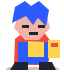

<!doctype html><html lang="en"><meta charset="utf-8"><meta name="viewport" content="width=device-width,initial-scale=1"><title>Collage | Paper office</title>
<style>*{box-sizing:border-box}body{margin:0;background:#1E2430;color:#FFF6E5;font:14px/1.4 system-ui,sans-serif}main{width:min(100%,1040px);margin:auto;padding:24px}header{display:flex;justify-content:space-between;align-items:baseline;gap:16px;border-bottom:3px solid #FFD34D;padding-bottom:12px}h1{margin:0;font-size:20px;letter-spacing:.06em;text-transform:uppercase}header span{color:#F3B2A7}.room{display:block;width:100%;height:auto;margin:18px 0;background:#FFF6E5;border:8px solid #EF4B3E}.cast{display:flex;justify-content:space-around;align-items:end;gap:16px;flex-wrap:wrap;padding:16px;background:#FFF6E5;color:#1E2430;border:6px solid #2D5BFF}figure{width:112px;margin:0;text-align:center}figure img{display:block;width:64px;height:72px;margin:auto}figcaption{margin-top:6px;font-weight:800}@media(max-width:560px){main{padding:14px}header{align-items:start;flex-direction:column}}</style><main><header><h1>Paper office / cut room</h1><span>Collage · 彩纸事务所</span></header>
<svg class="room" xmlns="http://www.w3.org/2000/svg" viewBox="0 0 920 464" role="img" aria-label="A high contrast paper collage office with four workers, workbench, lounge and mailbox"><defs><pattern id="f" width="128" height="128" patternUnits="userSpaceOnUse"><image href="floor-oak.svg" width="128" height="128"/></pattern></defs><rect x="18" y="22" width="884" height="425" fill="#1E2430"/><rect x="30" y="34" width="860" height="399" fill="url(#f)"/><image href="wall-plaster.svg" x="30" y="34" width="860" height="64"/><image href="wall-window.svg" x="50" y="40" width="240" height="96"/><image href="wall-print.svg" x="355" y="40" width="108" height="96"/><image href="wall-window.svg" x="625" y="40" width="240" height="96"/><image href="rug.svg" x="298" y="235" width="307" height="179"/><image href="bookshelf.svg" x="52" y="122" width="112" height="128"/><image href="plant.svg" x="835" y="114" width="64" height="92"/><image href="desk.svg" x="402" y="132" width="172" height="136"/><image href="stool.svg" x="466" y="248" width="76" height="72"/><image href="coffee.svg" x="724" y="150" width="108" height="124"/><image href="sofa.svg" x="278" y="282" width="216" height="120"/><image href="cabinet.svg" x="747" y="291" width="136" height="128"/><image href="human-mailbox.svg" x="75" y="276" width="124" height="124"/><image href="glyph-select.svg" x="687" y="354" width="64" height="24"/><image href="actor-maker.svg" x="420" y="188" width="64" height="72"/><image href="actor-designer.svg" x="580" y="211" width="64" height="72"/><image href="actor-keeper.svg" x="687" y="294" width="64" height="72"/><image href="actor-scout.svg" x="190" y="300" width="64" height="72"/><image href="glyph-work.svg" x="472" y="196" width="24" height="24"/><image href="glyph-available.svg" x="632" y="228" width="24" height="24"/><image href="glyph-attention.svg" x="739" y="301" width="24" height="24"/><image href="envelope.svg" x="235" y="275" width="24" height="16"/><image href="door-threshold.svg" x="50" y="371" width="128" height="64"/></svg>
<section class="cast" aria-label="Character masters at native display size"><figure><figcaption>Maker · press</figcaption></figure><figure><figcaption>Designer · proof</figcaption></figure><figure><figcaption>Keeper · archive</figcaption></figure><figure><figcaption>Scout · courier</figcaption></figure></section></main></html>